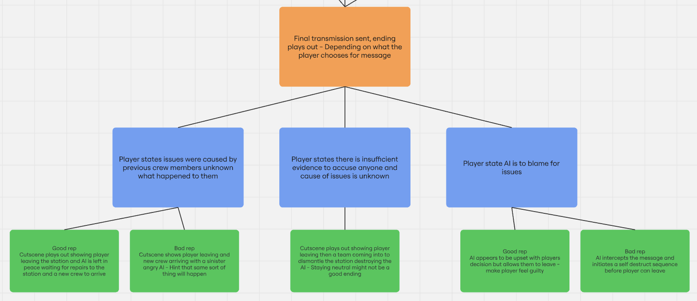

Ludonarrative Design | The Final Transmission
01 // PROJECT_ABSTRACT
The Final Transmission is a short, atmospheric story about exploration, trust, and the shifting nature of truth; set aboard a seemingly abandoned space station called the Aletheia. The only presence left on board is an AI caretaker. It's been alone for a long time. Whether it ’s helpful, hostile, or hiding something, is for the player to decide.
The core narrative revolves around the station going dark, the crew mysteriously disappearing and the ambiguity of the AIs intentions. The core gameplay loop revolves around interacting with the dynamic ship AI, exploring a computer terminal and reading crew logs and notes to piece together the percieved truth of what happened aboard the Aletheia. The game is designed to be very morally ambiguous the AI could be telling the truth, or it could be spreading misinformation for its own gain, the crew could be victims or the culprits. The player's interpretation and opinion shapes the choices they make and becomes their truth but nothing is ever truly confirmed.
02 // ARCHITECTURE_DETAILED
The architectural focus of this project centered on ludonarrative design, marrying gameplay mechanics with branching interactive storytelling to achieve tight narrative harmony. The primary narrative device for this project was the station AI which i utilised various mechanics and design choices to create:
- Dynamic Reputation: Implemented a state-tracking backend that monitors player dialogue choices and actions. This system dynamically shifts the AI caretaker’s disposition across a spectrum of behavioral states (e.g., escalating from cooperative to evasive or overtly hostile) based on how trusting or accusatory the player is.
- Generative Dialogue & Asset Pipeline: To reinforce the uncanny, synthetic presence of the AI, both the textual scripts and vocal audio files were synthesized using generative AI models. By intentionally prompting for variations in tone - ranging from over-helpfulness to subtle suspicion - the pipeline introduced an inherently artificial tone and mannerisms that weaponize the AI's communication to distort or validate the player's perspective.
- The AI as an unreliable guide: The Ship's AI was engineered to be intentionally unreliable, mirroring public anxiety regarding the future of artificial intelligence. This design aims to achieve tight ludonarrative harmony, by forcing players to cross-examine the AI’s information rather than blindly trusting it, the gameplay loop directly subverts the passive reliance on automated systems often seen in the real world.
- Environmental & Systemic Storytelling: Exploration functions as a core mechanic through a network of terminal notes, logs, and physical clues scattered across the station. This data-driven environment is intentionally contradictory, some logs validate the AI, while others completely undermine it, forcing the player to filter information actively.
- Dynamic Event-Driven Narrative (The Story Manager): Implemented a centralized event manager to coordinate chronological and conditional events. This system triggers events based on player progression data - such as a localized explosion firing coincidentally right after the player uncovers a restricted file, implicating the AI. It also handles conditional logic, such as dynamically serving conflicting pieces of evidence in sequence to intentionally obfuscate the truth. Below you can see the story board that outlines the game.
- Subjective Ending Logic: The culmination of the branching paths feeds into a final message mechanic where the player constructs a definitive "Final Transmission." This transmission serves as an explicit choice reflecting what the player chose to believe, directly generating a conclusion tailored to their subjective interpretation of the terminal state.



03 // HURDLES_RESOLVED
The main challenge with this project was switching to a design focused mindset as a programmer, while i have experience designing the ideas of games, it was always done from a mechanics-first standpoint. The main difficulty with switching to this design methodology was managing and designing a branching story. To resolve this challenge i mapped out the story using the "story manager" along with working backwards from the endings i wanted for the vertical slice demo. By knowing the endings it allowed me to know where i needed to end up and therefore i was some of the way to how to get there. By then structuring the story using specific events i could systemically tackle them one by one until i had the finished product.